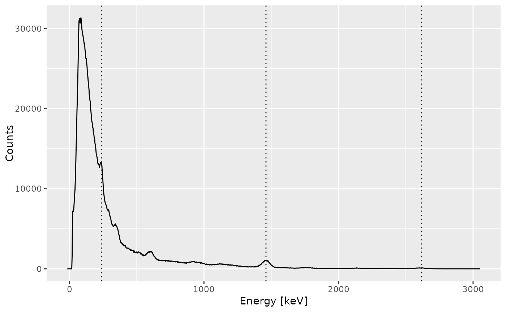

Calibrates the energy scale of a gamma spectrum.
Usage
energy_calibrate(object, lines, ...)
has_energy(object)
has_calibration(object)
# S4 method for class 'GammaSpectrum,lm'
energy_calibrate(object, lines, ...)
# S4 method for class 'GammaSpectrum,GammaSpectrum'
energy_calibrate(object, lines, ...)
# S4 method for class 'GammaSpectrum,CalibrationCurve'
energy_calibrate(object, lines, ...)
# S4 method for class 'GammaSpectrum,list'
energy_calibrate(object, lines, ...)
# S4 method for class 'GammaSpectrum,PeakPosition'
energy_calibrate(object, lines, ...)
# S4 method for class 'GammaSpectra,list'
energy_calibrate(object, lines, ...)
# S4 method for class 'GammaSpectra,PeakPosition'
energy_calibrate(object, lines, ...)
# S4 method for class 'GammaSpectra,lm'
energy_calibrate(object, lines, ...)
# S4 method for class 'GammaSpectra,GammaSpectrum'
energy_calibrate(object, lines, ...)
# S4 method for class 'GammaSpectra,CalibrationCurve'
energy_calibrate(object, lines, ...)
# S4 method for class 'GammaSpectrum'
has_energy(object)
# S4 method for class 'GammaSpectra'
has_energy(object)
# S4 method for class 'GammaSpectrum'
has_calibration(object)
# S4 method for class 'GammaSpectra'
has_calibration(object)Arguments
- object
A GammaSpectrum or GammaSpectra object.
- lines
A PeakPosition object or a
listof length two. If alistis provided, each element must be a named numeric vector giving the observed peak position ("channel") and the corresponding expected "energy" value (in keV). Alternatively, the function accepts the stats::lm object from a another calibration or a GammaSpectrum object from which such calibration is copied. With this, energy calibrations can be transferred from one object to another.- ...
Currently not used.
Value
energy_calibrate()returns either a GammaSpectrum or a GammaSpectra object depending on the input#has_energy()andhas_calibration()return alogicalvector.
Details
The energy calibration of a spectrum is the most tricky part. To do this, the user must specify the position of at least three observed peaks and the corresponding energy value (in keV). A second order polynomial model is fitted on these energy vs channel values, then used to predict the new energy scale of the spectrum.
The package allows to provide the channel-energy pairs to be use. However, the spectrum can be noisy so it is difficult to properly determine the peak channel. In this case, a better approach may be to pre-process the spectrum (variance-stabilization, smoothing and baseline correction) and perform a peak detection. Once the identified peaks are satisfactory, you can set the corresponding energy values (in keV) and use these lines to calibrate the energy scale of the spectrum.
Regardless of the approach you choose, it is strongly recommended to check the result before proceeding.
Examples
## Import a CNF file
spc_file <- system.file("extdata/LaBr.TKA", package = "gamma")
(spc <- read(spc_file))
#> Gamma spectrum:
#> * name: LaBr
#> * date: 2024-09-20 15:28:04.246527
#> * live_time: 3385.54
#> * real_time: 3403.67
#> * channels: 1024
#> * energy_min: NA
#> * energy_max: NA
## Set peak positions (channel) and expected energy values
calib_lines <- list(
channel = c(86, 495, 879),
energy = c(238, 1461, 2615)
)
## Adjust the energy scale
(spc1 <- energy_calibrate(spc, lines = calib_lines))
#> Gamma spectrum:
#> * name: LaBr
#> * date: 2024-09-20 15:28:04.246527
#> * live_time: 3385.54
#> * real_time: 3403.67
#> * channels: 1024
#> * energy_min: -15.38
#> * energy_max: 3052.2
## Inspect results
plot(spc1, xaxis = "energy", yaxis = "count") +
ggplot2::geom_vline(xintercept = c(238, 1461, 2615), linetype = 3)
